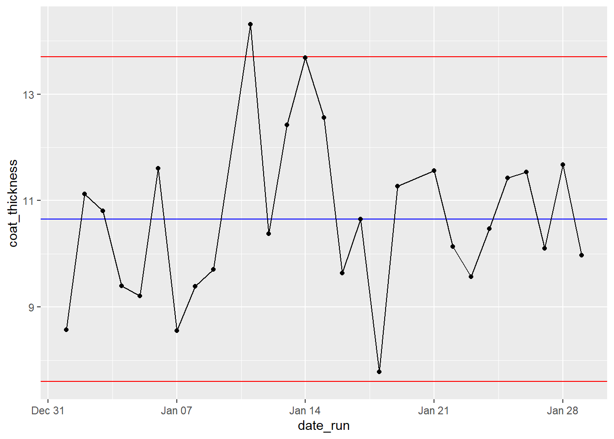
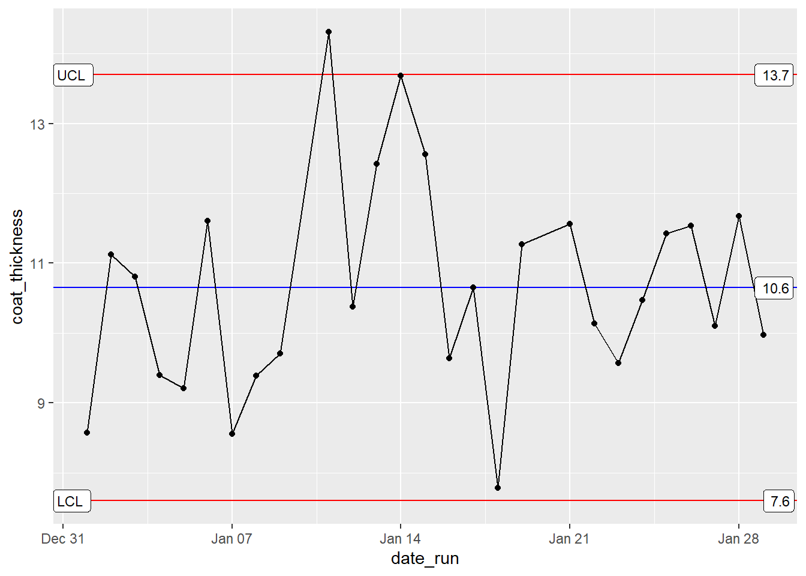
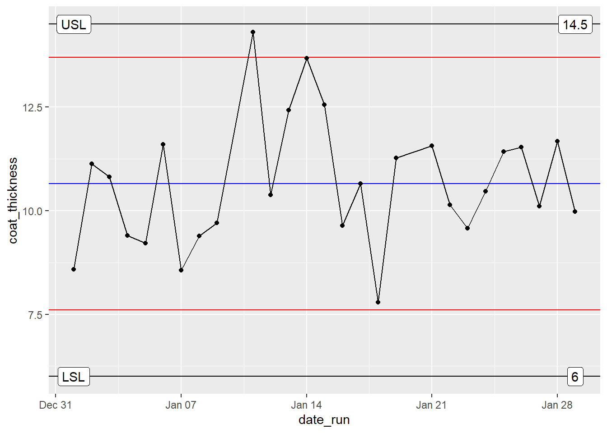

I am going to test out the ggQC package in this project. I am new to R, and although I have made more than a few process QC visualizations,I have not used R for building a single one! In case you are wondering, my go to platform at work used to be JMP/JSL, but I am unemployed now, and do not want to spend the $$$ for purchasing a JMP license - thankfully R is free and this way I get to learn something new, its a WIN-WIN!
I am going to use the demo HERE as a guide.
First step is to create a dataset. Below code will simulate production line data from a photresist (a chemical, usually liquid, used for manufacturing computer chips) manufacturing plant. The manufacturing process is a ‘batch process’ where each batch produces 100 bottles of resist. After packaging, 3+3+3 bottles are pulled from begining, middle and end of the fill process and sent to internal QC. One of the QC check is to measure resist coat thickness after spin coating dummy silicon wafers. In reality, many variables (temperature, humidity, time elapsed between various process steps, operator, container/reactor and so on) can affect the end result.
In below example - to keep things simple - we will only be looking at the variability as a function of varying raw material lot.
library(ggplot2)
set.seed(5555)
resist_df1 <- data.frame(
resist_bottle = as.factor(rep(1:9, each=3)),
coat_thickness = rnorm(n = 3*9, mean = 10, sd = 2),
raw_material_A_lot = as.ordered(rep(2)),
raw_material_B_lot = as.ordered(rep(1)),
date_run = sample(rep(seq(as.Date('2019/01/01'), as.Date('2019/01/09'), by="day")))
)
head(resist_df1)## resist_bottle coat_thickness raw_material_A_lot raw_material_B_lot date_run
## 1 1 8.461665 2 1 2019-01-09
## 2 1 9.104604 2 1 2019-01-06
## 3 1 7.191413 2 1 2019-01-07
## 4 2 10.784097 2 1 2019-01-03
## 5 2 11.488648 2 1 2019-01-02
## 6 2 7.077962 2 1 2019-01-04resist_df2 <- data.frame(
resist_bottle = as.factor(rep(1:9, each=3)),
coat_thickness = rnorm(n = 3*9, mean = 11, sd = 2.5),
raw_material_A_lot = as.ordered(rep(2)),
raw_material_B_lot = as.ordered(rep(1)),
date_run = sample(rep(seq(as.Date('2019/01/11'), as.Date('2019/01/19'), by="day")))
)
resist_df3 <- data.frame(
resist_bottle = as.factor(rep(1:9, each=3)),
coat_thickness = rnorm(n = 3*9, mean = 10.5, sd = 1.6),
raw_material_A_lot = as.ordered(rep(3)),
raw_material_B_lot = as.ordered(rep(2)),
date_run = sample(rep(seq(as.Date('2019/01/21'), as.Date('2019/01/29'), by="day")))
)
resist_df <- rbind(resist_df1, resist_df2, resist_df3)
head(resist_df)## resist_bottle coat_thickness raw_material_A_lot raw_material_B_lot date_run
## 1 1 8.461665 2 1 2019-01-09
## 2 1 9.104604 2 1 2019-01-06
## 3 1 7.191413 2 1 2019-01-07
## 4 2 10.784097 2 1 2019-01-03
## 5 2 11.488648 2 1 2019-01-02
## 6 2 7.077962 2 1 2019-01-04Okay, now its time to try out the ggQC package.
First, I am going to make the control charts for the resist coat thickness.
XbarR <- ggplot(resist_df, aes(x = date_run, y = coat_thickness, group = 1)) +
stat_summary(fun.y = mean, geom = "point") +
stat_summary(fun.y = mean, geom = "line") +
stat_QC() ## Warning: `fun.y` is deprecated. Use `fun` instead.
## Warning: `fun.y` is deprecated. Use `fun` instead.
## Warning: `fun.y` is deprecated. Use `fun` instead.
## Warning: `fun.y` is deprecated. Use `fun` instead.XbarR
XbarR + stat_QC_labels()
The chart looks nice. But I would like to be able to see zones (1,2,3 sigma) add spec limits, and see how the final chart turns out. I find it useful sometimes to have spec limits available in visualization for XbarR charts for mature processes because: For a production process, the capability has already been established. Having spec limits on the chart help in getting a quick estimate of product disposition for out of control points *Process may be stable and in control, but off target. Mean may shift over time. Lets assume that the process for which this resist will be used has spec limits set to 14.5units for USL(upper spec limit) and 6units for LSL(lower spec limit). Any product that lies outside of these limits will need to be dispositioned as scrap.
usl <- 14.5
lsl<-6
XbarR +
geom_hline(aes(yintercept=14.5)) +
geom_label(aes(x= as.Date('2019/01/01'),usl,label = "USL"))+
geom_label(aes(x= as.Date('2019/01/01'),usl,label = usl), nudge_x = 28)+
geom_hline(aes(yintercept=6)) +
geom_label(aes(x= as.Date('2019/01/01'),lsl,label = "LSL"))+
geom_label(aes(x= as.Date('2019/01/01'),lsl,label = lsl), nudge_x = 28)
Copyright © , Amber Ahmed. All rights reserved.